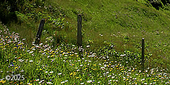
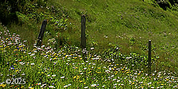

The Reich Family
Children of His Eminence


Gathered Together In His Name
We are the chosen elite of Reich, our anointed leader, whose name we take as our own. We rely upon the divine guidance of His Eminence. We are a communal family that embraces a common cause and the belief that members of our privileged group possess a divine power within us that is the result of the intellectual and spiritual enlightenment instilled in us by our anointed Father.
The Reich Family is a commune; not a cult. The Cambridge Dictionary defines the term commune as a group of families or single people who live and work together, sharing possessions and responsibilities. We treasure our existence and work hard to maintain the best life for ourselves and our children.
Members are not required to forsake their own personal religions upon joining the Reich Family. A large percentage of those who come to us are Christian or Catholic in faith which is theirs to keep personally in their hearts. We do practice the separation of religion and family in governing our commune. In other words, we do not mix the private religious beliefs of our members with the running of our Family.
Reich often refers to Jesus, Muhammad, Buddha and other deities in his teachings. We refer to the life of Jesus on this page because we respect him and the great value of his teachings, his life, and his sacrificial death. There is no centralised religion at the heart of this family. Extreme religion in group settings can breed fanaticism and worse. This has been the downfall of many groups in the past. We have taken notice of the past catastrophes of other communal group efforts and guard against the elements that led to each group's demise.
Reich is our anointed earthly Father, whom we dearly love and deeply respect. He is the supreme Head of our Family. We rely upon the guidance and teachings of His Eminence. However, we do not worship Reich as our God. There are identical similarities between our exaltation of Reich and the Catholic Church's exaltation of the Pope. As the Pope is not the God of Catholics, Reich is not the God of the Reich Family, nor is any other earthly man, woman, or child.
We have all pledged our properties and income to the family. This requires a great degree of trust which we all have in our beloved leader, Reich. We give all our earthly possessions to our family upon joining because we all want to live in the presence of His Eminence and reside in the loving arms of His Family. We autonomously provide for ourselves with the pooling of our bountiful resources and the collection of our professional talents. Our commitment and complete devotion to His Eminence and to His Family, coincides with a story from the life of Jesus, when he was approached by a rich young ruler who asked him what he must do to have eternal life.
In the 19th chapter of Matthew, Jesus responded to the rich young ruler, "If you wish to be perfect, go, sell your possessions, and give the money to the poor, and you will have treasure in Heaven. Then come, follow me.” When the young man heard this, he went away grieving, for he possessed great wealth. Jesus then said to his disciples, "It is easier for a camel to pass through the eye of a needle than for someone who is rich to enter the Kingdom of Heaven."
His disciple Peter then responded, “We have given up everything to follow you. What then will there be for us?” Jesus replied, “Amen, I say to you, at the renewal of all things, when the Son of Man is seated on his glorious throne, you who have followed me will yourselves sit on twelve thrones, judging the twelve tribes of Israel. And everyone who has left houses or brothers or sisters or father or mother or children or lands for the sake of my name will receive a hundred times more and will inherit eternal life. But many who are first will be last, and the last will be first." (Matthew 19, New Catholic Bible)
 

While it must be acknowledged that Jesus told the rich young ruler to give his wealth to the poor, our beloved leader is not Jesus. Reich cannot turn water into wine or multiply the loaves and fishes to feed every man, woman, and child present. Reich is an earthly being who was created in the image of God, yet he cannot be God. Reich cannot grant us eternal life or offer us the Kingdom of Heaven. But he can grant us entrance into His Family. He can grace us with the presence of His Eminence so that we might be enlightened by his teachings and filled with His Infinite Wisdom. The blessings that come from being a part of the Reich Family and being in the presence of His Eminence, is more than enough to bring us great joy for a lifetime here on earth.
Our children are raised in a nurturing environment of love and guidance, as prescribed by our anointed Father. We feel that our children are the most protected ones on earth. They are not sent amongst the strangers in the outside world who might pose a danger to them. Education is the most important factor of empowering children. We teach our children within our commune. We incorporate the resources found on the Internet and elsewhere. Technology is important to us all and is taught to our children from a very early age.
Aside from academics, our children's many talents are nurtured and encouraged through a range of instruction that might enhance the areas of art, music, theatre, dance, singing and other areas of the performing arts or any other endeavor of creative expression. Our children and teens engage in plays, dance, concerts, and art exhibitions throughout the year.
Physical health is just as important to children and teens as academics. Our children and teens engage in an array of sports activities that include, but are not limited to: cross country, track, climbing, hiking, volleyball, basketball, softball, tennis, gymnastics, swimming, soccer, and more. We hold various competitions throughout the year. Reich emphasizes that our bodies are our temples. He asks us to dedicate ourselves to a healthy diet and adequate exercise. Sports and the great outdoors are a large part of the lives of our youth and us all.
We have high expectations of our youth throughout their stay within our commune but especially at the end of their secondary education. We encourage outside university attendance for our youth after the secondary education that we provide within our commune. We grant each post-secondary youth member the freedom to determine their own paths for the future. We provide as much career and university guidance as we can to them prior to their decisions. When our youth members complete their secondary education, which occurs from the ages of 16 to 18, and have chosen a path for their future, they are free to leave us and go out into the world to attend university or to pursue the lives of their choice. If our youth return to the Reich Family after university, or at any time in their lives after leaving us, we are so happy to have them back; however, any such return to the family is their choice. If they wish to stay out in the world, they are still loved and are welcome to return to the family for visits anytime they would like.
The practice of encouraging our youth to leave us as teens at the end of their secondary education is similar to one practiced by the Amish. Rumspringa is a rite of passage for Amish youth, typically starting at age 16, during which they are allowed to explore the outside world and experience behaviors that are usually restricted in their community. This period helps them make informed decisions about whether to commit to the Amish faith or leave the community altogether. Rumspringa is a Pennsylvania German combination of two high German words. Rum is raum in high German, which means space. Springa is spring in high German which means, to jump. Together, the term Rumspringa means to jump around in open space. For our teens, Rumspringa means freedom and discovery in the outside world away from their community. His Eminence teaches us that Rumspringa is an essential progression in our teens' life journey. He teaches us that nature dictates that teens should leave their parents at the time and age that is appropriate for each individual youth member of our family. According to His Eminence, restricting them is a violation of nature and comes with dire consequences for our teens and our family. We love our teens; therefore, we let them go.
You might ask, isn't it normal for any family to allow their teens to leave home at the end of their secondary education? Our answer to that question is a resounding, yes it is very normal and that's the reason we practice it. It should go without saying that persons of any age can come and go freely; however, since we are a communal family with an esteemed leader, it needs to be understood by the outside world looking in, that the Reich Family grants the freedom for our post-secondary youth, individual adult members, or entire biological families within our commune, to leave us. Furthermore, it needs to be understood that those who leave us do so without any future restrictions of returning to us, either on a long term basis stay or for a short visit. We love the members of our family, whether they are physically present with us or whether they have departed from us. We welcome them back with open arms, regardless of whether they have been away from us for a month or several years.


The Reich Family holds the same views as the Church of Jesus Christ of Latter Day Saints (LDS or The Mormons) as to the importance of genealogical research. Reich Research is a genealogical project of the Reich Family. The site serves as a depository for genealogical records, historical accounts, and memories of those who have passed. Genealogical research is conducted thoroughly using such resources as FamilySearch.org, JewishGEN, and more. Reich Research writes articles and memorials based on research documents that include but are not limited to: census records, marriage records, death certificates, military records, naturalization papers, ship manifests, and more. All memorials and articles are private and are intended only for family members and fellow researchers unless otherwise decided to be of great importance to the public historical record.
The Reich Family is sometimes forced to change locations as a protective measure. Our location is never disclosed to the public to further ensure the privacy and safety of our family. There has never been any consideration to live in the United States of America because of the legal and social climate that exists there for our leader. We pledge to protect His Eminence and our family in safer countries around the world, far from the hostile environment in the United States that exists for our anointed Father.
Our beloved Reich has endured an event similar to that of the scorn, ridicule, hatred, and abuse of Jesus prior to the crucifixion. We are ever vigilant of a possible Judas Iscariot amongst us, who might try to hand over our beloved Reich to the authorities to be hauled away in chains, much as Jesus was arrested and ultimately handed over to the Romans, leading to his conviction and crucifixion. As long as the Reich Family is alive and strong, we will prevent our anointed leader from a horrible fate. Unfortunately, we are without our beloved leader at times when he must be separated from us and hidden away. This is for the protection of Reich but also for the protection of the family. During these times of distance from us, he suffers in complete isolation without the loving embrace of his family, who is likewise deprived of the presence of His Eminence.
We are the Family of Reich, our anointed earthly Father, whom we dearly love and deeply respect as the supreme Head of our Family. We rely upon the guidance and teachings of His Eminence. We are devoted to an autonomous existence, based on the bounties of our collective professional and monetary contributions to the good of our commune. We are immersed in the body of our family, allowing us to express our eternal love and loyalty, one to another. Friends, supporters, and those interested in joining us are always welcome at our table.